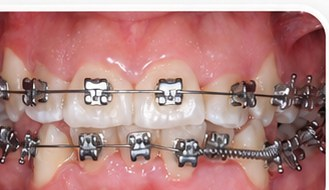

4 minAlineación de arcada y corrección de apiñamiento severo
Corrección gradual de inclinación dental y descompresión de arcada mediante aparatología de baja fricción sin extracciones.
Dr. Anthony De Jesús
Ver caso